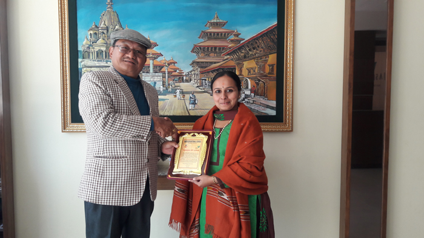

"The whole purpose of education is to turn Mirrors into Windows"-Sydney Harris
The Principle of Appollo National Public School:Dr.Neerda.She is a great administrator and an even better academician
She is double Postgraduate Degree holder with an Honorary Doctrate, and a trained teacher in Geography and English with more than 24 years of teaching
experience.She has taught ICSE,IGCSE and the Edexcel curricula.
Rathna Sindhur maám is associated with the school as an English teacher. She wanted to take up teaching English because:
~Of her desire and passion for innovative teaching.
~She wants to mould the minds of the students by teaching.
~Feels that a teacher can teach a code of conduct, value systems and ethics to students.
~A teacher can demand the highest respect from the students which no other profession can provide.
Ratna Sindhur says that teachers must know the aim of the lesson, how learners will benefit and how it will be related to the students before
starting the lessons.
Her classes focus on how to make the lessons enjoyable and attractive to students.
She aims at keeping the class
engaged with a focus on personal, and social development, better attitude towards society, and help in choosing the best books.
Ratna Sindhur uses a holistic approach in teaching but not compartmentalize it.
With an integrated approach to teaching, things fall in place and students are excited as also the teachers.
Ratna Sindhur uses a holistic approach in teaching but not compartmentalize it.
With an integrated approach to teaching, things fall in place and students are excited as also the teachers.
Ratna Sindhur concludes saying that teacher-student relationship is considered the highest relation ever recorded in history. For her, it is a great day when student assimilates thoughts, follows it and spreads it all over the world.

There are also many teachers who have a great position in our school:
1.Mary mam [English HOD]
2.Pushpa mam [Computer HOD]
3.Vijay sir [Maths HOD]
4.Mamtha mam [Science HOD]
5.Archana mam [Kannada HOD]
6.Madhu mam [Hindi HOD]
7.Ramani mam [Social HOD]